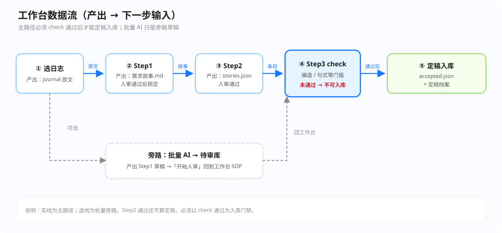

—当前阶段
0反馈轮次
0故事条数
—Step1 锁定
研发日志（全文对照）↕ 独立滚动 ·
加载中…
电脑整理结果 · ↕ 独立滚动
点击下方「运行」开始
使用手册
把研发日志整理成可定稿的「用户要什么」条目。通过/打叉都要写理由；定稿前必须 check 通过。演示账号：demo / demo1234。
1. 这是干什么的？
- 挑一份研发日志；
- AI 先写草稿；
- 人审两轮（Step1 需求故事 → Step2 用户故事）；
- Step3：先 check 通过，再定稿进「定稿档案」。
电脑帮忙写，人拍板。批量只是先排队写草稿，不能一键全过。
2. 数据流 + 界面对照（图与截图一起看）
左边是整条流水；右边是对应界面。滚手册时左侧目录栏固定不动，点目录可跳回任意节。

图：工作台数据流。实线主路径；虚线批量旁路。check 未通过不能入库。

对应：选日志（日志库）

对应：Step1～3 工作台

对应：定稿入库后的档案
步骤本步产出交给下一步当输入
选日志当前 journal 原文Step1 对照与抽取的唯一依据
Step1需求故事 .md（人审通过后锁定）Step2 抽取「用户要…」的底稿
Step2stories.json（人审通过）Step3 check + 定稿的条目源
Step3 check编造/句式等门槛结果通过后才允许定稿入库
定稿accepted.json + 定稿档案检索、复审、结项证据
批量 AI待审库里的 Step1 草稿「开始人审」→ 回到工作台 SOP

人审（通过/打叉）
必须写理由；打叉会重跑当前步

待审库（批量旁路）
可取消排队/写稿中任务，防隐性覆盖
Check → 定稿
未 check 通过则入库按钮禁用
3. 左边入口
- 工作台：审稿主战场。
- 日志库：全部日志；可筛用途/速度（快<1200 · 中1200–3499 · 慢≥3500 字）。
- 待审库：批量 AI 后的排队。
- 审核历史 / 定稿档案：回溯与已定稿台账。
4. 怎么选日志？
日志库筛选后点「选用并去工作台」；工作台「快速更换」选中后会自动关窗。界面见图节「2. 数据流 + 界面对照」右侧「选日志」。
- 试跑：选「试跑/摘录」；正式定稿：选产品流+日期的全文。
- 已定稿一般不必再审；要重做用「强制复审」。
5. 工作台标准步骤
界面总览见第 2 节右侧「工作台」截图；人审区见同节下方故事板。
- 填审核人。
- 运行 Step1 → 对照 → 通过/打叉（都写理由）。
- 运行 Step2 → 同上；可点右侧条目高亮左侧原文。
- 进入 Step3：先点「① 运行 check」；只有通过后「② 生成定稿并归档」才可点。
- 定稿成功后去「定稿档案」核对。
Step2 通过还不算定稿。check 不过 → 不能入库；改条目后需重新 check。
6. 对照原文（非 AI）
Step2/定稿后点右侧「用户要…」→ 左侧滚到匹配段（黄/蓝/绿表示匹配强度）。
7. 批量 → 待审库
日志库勾选 →「批量 AI → 待审库」→ 待审库「开始人审」→ 回工作台按第 5 步。仍须逐条写理由。排队中 / AI 写稿中可点取消任务释放占位后再入队。界面见第 2 节故事板「待审库」。
8. 定稿档案
界面见第 2 节右侧「定稿档案」。按产品流分组；同一日志复审再定稿会更新该条，不会无故 +1。
9. 卡住了怎么办？
- 打不开页：确认启动黑窗还在，地址
http://127.0.0.1:8765/。 - 定稿按钮灰：先跑 check 并看是否通过。
- 通过没反应：检查审核人与理由是否填写。
- Step1/Step2 很久才报错：可能是AI 推理超时（长日志 + 慢模型），不是服务没启动。可把模型改成 flash，或加大
LLM_TIMEOUT后重启。 - 提示「连不上服务」但黑窗还在：多半是浏览器到本机请求失败或中途被掐断；看黑窗是否还在跑、报错里是超时还是真宕机。
- 日志很少：跑
scripts/sync_journals.py或粘贴自定义日志。